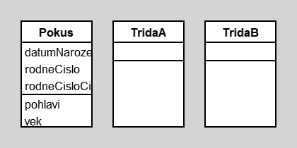

s
author(s): s
s
Workspace
VisualLauncher open
x := Pokus new.
x datumNarozeni: '15-JAN-2000' asDate.
x rodneCislo: '000115/1234'.
y := Pokus new.
(123456 printString) at: 3
b := Bag new.
b add: (TridaA new); add: (TridaB new); add: (TridaA new); add: (TridaA new); add: (TridaB new).
b select: [:t | t class name asString = 'TridaA']
b select: [:t | t class name = #TridaA]
Workspace Objects
Script
"Note that variables begining with uppercase letter will be moved into the workspace pool."
Diagram

Classes
Pokus
|
instance variables
datumNarozeni :Date
rodneCislo :String
rodneCisloCislo :Number
|
methods
datumNarozeni
datumNarozeni:
initialize
pohlavi
rodneCislo
rodneCislo:
rodneCisloCislo
rodneCisloCislo:
vek
|
|
|
code of non-accessing methods:
-
initialize
"generated by Daskalos"
super initialize.
datumNarozeni := nil.
rodneCislo := nil.
rodneCisloCislo := nil.
-
pohlavi
rodneCislo isNil ifTrue: [^'nezname'].
"(rodneCislo at: 3) = $5 | ((rodneCislo at: 3) = $6)
ifTrue: [^'zena']
ifFalse: [^'muz']"
(#($5 $6) includes: (rodneCislo at: 3)) ifTrue: [^'zena'] ifFalse: [^'muz']
-
vek
datumNarozeni isNil ifTrue: [^-1].
^((Date today subtractDate: datumNarozeni) / 365.2422) truncated
TridaA
|
instance variables
|
methods
|
|
|
code of non-accessing methods:
TridaB
|
instance variables
|
methods
|
|
|
code of non-accessing methods:
Links
Data file and
class source.
Generated by Daskalos - Object Modeling Tutor (C) 2006 V. Merunka
April 4, 2020